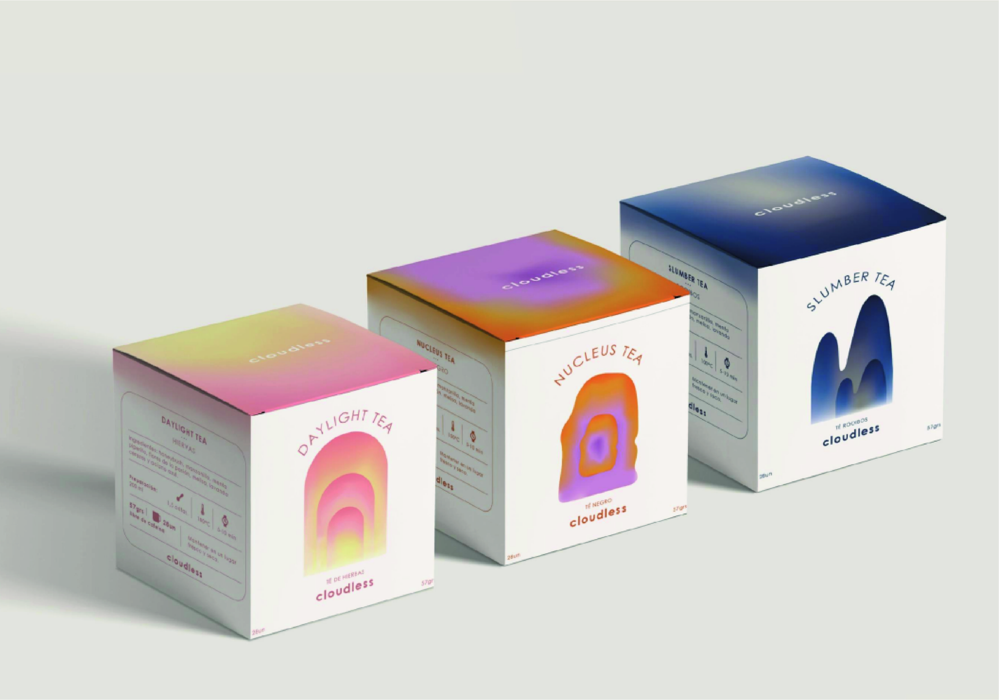
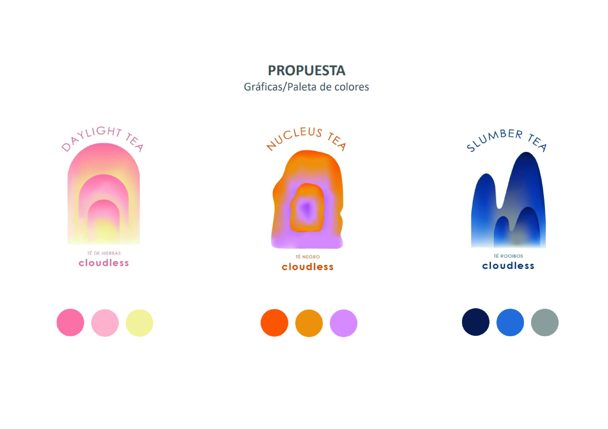
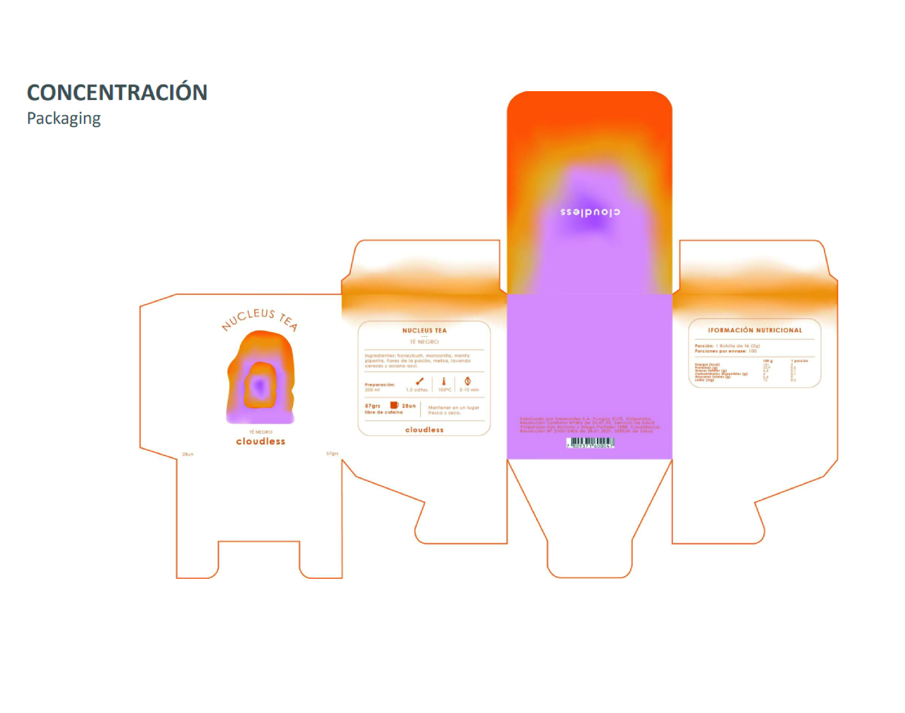
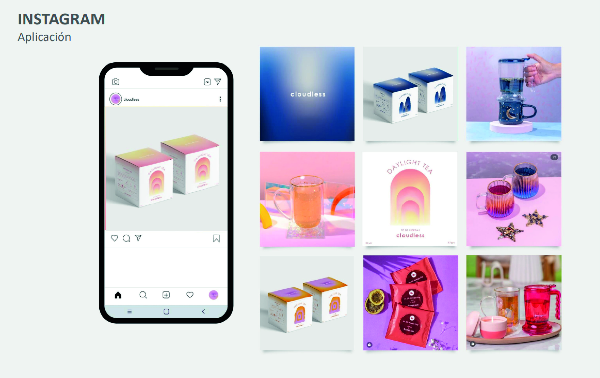

Este proyecto se enfocó en explorar el color como eje central para diseñar una línea de té inspirada en tres momentos específicos del día: el despertar, la concentración y el descanso. Cada momento fue interpretado a través de moodboards que definieron las paletas de colores y las emociones asociadas. Posteriormente, estos conceptos se integraron en una identidad visual cohesiva, que incluyó elementos gráficos y cromáticos unificados. El resultado fue una línea de productos que refleja visual y emocionalmente la esencia de cada momento, logrando transmitir una experiencia sensorial única a través del diseño.
- Integrantes: Catalina Álvarez.
- Fecha: 24/05/2023
- Temática: Color, Branding.
- Recursos usados: Illustrator, Photoshop.